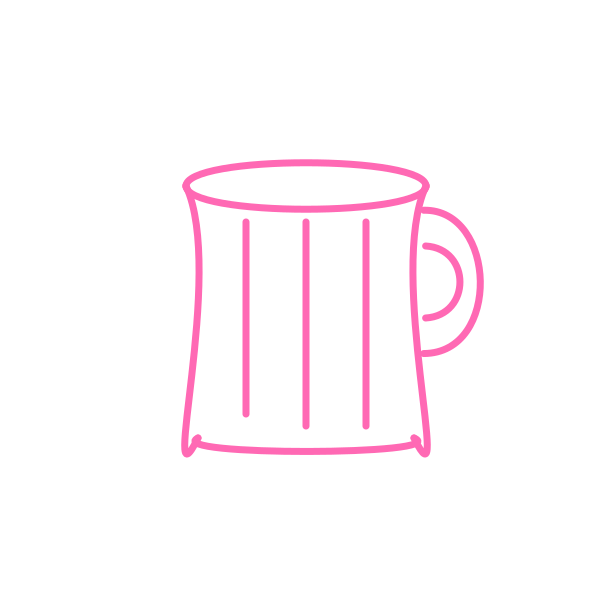

How does it work?
We leverage an off-the-shelf pretrained multimodal LLM to draw sketches based on natural language instructions.
Although these models can produce SVGs through direct prompting, the results often appear "mechanical," with uniform and overly precise shapes that lack the organic qualities of human sketches:
Although these models can produce SVGs through direct prompting, the results often appear "mechanical," with uniform and overly precise shapes that lack the organic qualities of human sketches:
Furthermore, while these models excel in textual tasks, they often struggle with fine-grained spatial reasoning, limiting their effectiveness for sketch editing.
To overcome these challenges, we introduce an intuitive sketching language that combines a grid canvas with Bézier curve processing.
- The canvas is a numbered grid (1–50) along the x-axis and y-axis. Each cell is uniquely identified by its x and y coordinates (e.g., the bottom-left cell is x1y1).
- In our sketching language, a sketch is defined as a sequence of n ordered strokes, where each stroke is defined by a sequence of m cell coordinates on the grid:
How to we process the textual strokes so that the sketch appears more natural?
We treat the specified (x,y) coordinates as a set of desired points sampled along the curve, and fit a smooth Bezier curve to them.
Here is how a cubic Bezier curve is defined mathematically:
\[ B(t) = (1 - t)^3P_0 + 3(1-t)^2tP_1 + 3(1-t)t^2P_2 + t^3P_3, \]
Where the set \(P=\{P_0, P_1, P_2, P_3\}\) is often referred to as the curve's control points, and \(t\in[0,1]\) is a parameter that moves the point along the curve from \(P_0\) at \(t=0\) to \(P_3\) at \(t=1\).To fit a curve to the specified coordinates, the model determines when each point on the curve is reached, corresponding to the \(t\) parameter.
Using the provided coordinates and \(t\) values, we fit a cubic Bézier curve to the sampled points by solving a system of linear equations with least squares, where the unknowns are the control points \(P={P_0,P_1,P_2,P_3}\):
\[ P = \text{argmin}_P ||AP - B||, \]
After proccessing the agent's output into vector graphics, we render the strokes onto the canvas to form the final sketch. The overall process is seen below:
SketchAgent, a frozen multimodal LLM, takes three inputs: (1) a system prompt detailing the sketching language guidelines, (2) a user prompt with task-specific instructions (e.g., "Draw a shark"), and (3) a blank canvas for sketching.
Based on the task, the agent generates a textual response representing the sequence of strokes. These strokes are processed into vector graphics and rendered onto the canvas. The canvas can then be reused in two ways: (1) it can be fed back into the model with updated prompts for additional tasks or edits, or (2) it can be accessed by a human user for collaborative sketching.
Based on the task, the agent generates a textual response representing the sequence of strokes. These strokes are processed into vector graphics and rendered onto the canvas. The canvas can then be reused in two ways: (1) it can be fed back into the model with updated prompts for additional tasks or edits, or (2) it can be accessed by a human user for collaborative sketching.
Gallery
butterfly
camel
elephant
frog
raccoon
Taj Mahal

Big Ben

Mount Fuji

Statue of Liberty

Sydney Opera House

DNA Double Helix

Double-slit experiment
Flowchart

Pendulum motion
A robot drawing on a canvas
Leveraging the inherent versatility of LLMs, our method generates highly diverse sketches. Below, we showcase 30 sketches illustrating a wide range of poses, structures, and qualities across various concepts.
We demonstrate the potential of our system for facilitating interactive human-agent collaboration, resulting in semantically meaningful and recognizable sketches.
We design a web-based collaborative sketching environment where users and SketchAgent take turns drawing on a shared canvas to create a recognizable sketch from a given textual concept. Participants sketched concepts in two modes: solo, where users drew independently, and collab, where users and SketchAgent collaborated, adding one stroke at a time until either was satisfied with the drawing.
In green are user drawn strokes and in pink are agent drawn strokes.
We design a web-based collaborative sketching environment where users and SketchAgent take turns drawing on a shared canvas to create a recognizable sketch from a given textual concept. Participants sketched concepts in two modes: solo, where users drew independently, and collab, where users and SketchAgent collaborated, adding one stroke at a time until either was satisfied with the drawing.
In green are user drawn strokes and in pink are agent drawn strokes.
User-only

Agent-only
User-Agent collaboration
User-only
Agent-only
User-Agent collaboration
User-only
Agent-only
User-Agent collaboration
User-only
Agent-only
User-Agent collaboration
User-only
Agent-only
User-Agent collaboration
User-only

Agent-only
User-Agent collaboration
BibTeX